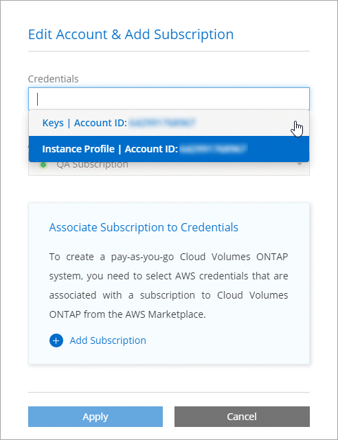
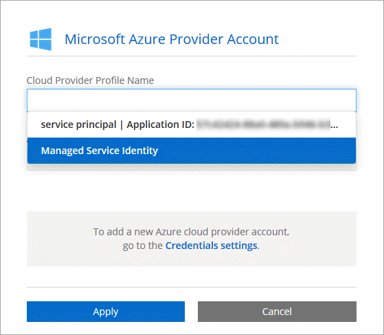

Adding Cloud Provider Accounts to Cloud Manager Edit on GitHub Request doc changes
Contributors
If you want to deploy Cloud Volumes ONTAP in different cloud accounts, then you need to provide the required permissions to those accounts and then add the details to Cloud Manager.
When you deploy Cloud Manager from Cloud Central, Cloud Manager automatically adds a Cloud Provider Account for the account in which you deployed Cloud Manager. An initial Cloud Provider Account is not added if you manually installed the Cloud Manager software on an existing system.
Setting up and adding AWS accounts to Cloud Manager
If you want to deploy Cloud Volumes ONTAP in different AWS accounts, then you need to provide the required permissions to those accounts and then add the details to Cloud Manager. How you provide the permissions depends on whether you want to provide Cloud Manager with AWS keys or the ARN of a role in a trusted account.
Granting permissions when providing AWS keys
If you want to provide Cloud Manager with AWS keys for an IAM user, then you need to grant the required permissions to that user. The Cloud Manager IAM policy defines the AWS actions and resources that Cloud Manager is allowed to use.
-
Download the Cloud Manager IAM policy from the Cloud Manager Policies page.
-
From the IAM console, create your own policy by copying and pasting the text from the Cloud Manager IAM policy.
-
Attach the policy to an IAM role or an IAM user.
The account now has the required permissions. You can now add it to Cloud Manager.
Granting permissions by assuming IAM roles in other accounts
You can set up a trust relationship between the source AWS account in which you deployed the Cloud Manager instance and other AWS accounts by using IAM roles. You would then provide Cloud Manager with the ARN of the IAM roles from the trusted accounts.
-
Go to the target account where you want to deploy Cloud Volumes ONTAP and create an IAM role by selecting Another AWS account.
Be sure to do the following:
-
Enter the ID of the account where the Cloud Manager instance resides.
-
Attach the Cloud Manager IAM policy, which is available from the Cloud Manager Policies page.

-
-
Go to the source account where the Cloud Manager instance resides and select the IAM role that is attached to the instance.
-
Click Trust Relationships > Edit trust relationship.
-
Add the "sts:AssumeRole" action and the ARN of the role that you created in the target account.
Example
{ "Version": "2012-10-17", "Statement": { "Effect": "Allow", "Action": "sts:AssumeRole", "Resource": "arn:aws:iam::ACCOUNT-B-ID:role/ACCOUNT-B-ROLENAME" } }
-
The account now has the required permissions. You can now add it to Cloud Manager.
Adding AWS accounts to Cloud Manager
After you provide an AWS account with the required permissions, you can add the account to Cloud Manager. This enables you to launch Cloud Volumes ONTAP systems in that account.
-
In the upper right of the Cloud Manager console, click the task drop-down list, and then select Cloud Provider Accounts.
-
Select AWS.
-
Choose whether you want to provide AWS keys or the ARN of a trusted IAM role.
-
Confirm that the policy requirements have been met and then click Add Account.
You can now switch to another account from the Details and Credentials page when creating a new working environment:

Setting up and adding Azure accounts to Cloud Manager
If you want to deploy Cloud Volumes ONTAP in different Azure accounts, then you need to provide the required permissions to those accounts and then add details about the accounts to Cloud Manager.
Granting Azure permissions using a service principal
Cloud Manager needs permissions to perform actions in Azure. You can grant the required permissions to an Azure account by creating and setting up a service principal in Azure Active Directory and by obtaining the Azure credentials that Cloud Manager needs.
The following image depicts how Cloud Manager obtains permissions to perform operations in Azure. A service principal object, which is tied to one or more Azure subscriptions, represents Cloud Manager in Azure Active Directory and is assigned to a custom role that allows the required permissions.

| The following steps use the new Azure portal. If you experience any issues, you should use the Azure classic portal. |
Creating a custom role with the required Cloud Manager permissions
A custom role is required to provide Cloud Manager with the permissions that it needs to launch and manage Cloud Volumes ONTAP in Azure.
-
Download the Cloud Manager Azure policy.
-
Modify the JSON file by adding Azure subscription IDs to the assignable scope.
You should add the ID for each Azure subscription from which users will create Cloud Volumes ONTAP systems.
Example
"AssignableScopes": [ "/subscriptions/d333af45-0d07-4154-943d-c25fbzzzzzzz", "/subscriptions/54b91999-b3e6-4599-908e-416e0zzzzzzz", "/subscriptions/398e471c-3b42-4ae7-9b59-ce5bbzzzzzzz" -
Use the JSON file to create a custom role in Azure.
The following example shows how to create a custom role using the Azure CLI 2.0:
az role definition create --role-definition C:\Policy_for_cloud_Manager_Azure_3.6.1.json
You should now have a custom role called OnCommand Cloud Manager Operator.
Creating an Active Directory service principal
You must create an Active Directory service principal so Cloud Manager can authenticate with Azure Active Directory.
You must have the appropriate permissions in Azure to create an Active Directory application and to assign the application to a role. For details, refer to Microsoft Azure Documentation: Use portal to create Active Directory application and service principal that can access resources.
-
From the Azure portal, open the Azure Active Directory service.

-
In the menu, click App registrations.
-
Create the service principal:
-
Click New application registration.
-
Enter a name for the application, keep Web app / API selected, and then enter any URL—for example, http://url
-
Click Create.
-
-
Modify the application to add the required permissions:
-
Select the created application.
-
Under Settings, click Required permissions and then click Add.

-
Click Select an API, select Windows Azure Service Management API, and then click Select.

-
Click Access Azure Service Management as organization users, click Select and then click Done.
-
-
Create a key for the service principal:
-
Under Settings, click Keys.
-
Enter a description, select a duration, and then click Save.
-
Copy the key value.
You need to enter the key value when you add a Cloud Provider Account to Cloud Manager.
-
Click Properties and then copy the application ID for the service principal.
Similar to the key value, you need to enter the application ID in Cloud Manager when you add a Cloud Provider Account to Cloud Manager.

-
-
Obtain the Active Directory tenant ID for your organization:
-
In the Active Directory menu, click Properties.
-
Copy the Directory ID.

Just like the application ID and application key, you must enter the Active Directory tenant ID when you add a Cloud Provider Account to Cloud Manager.
-
You should now have an Active Directory service principal and you should have copied the application ID, the application key, and the Active Directory tenant ID. You need to enter this information in Cloud Manager when you add a Cloud Provider Account.
Assigning the Cloud Manager Operator role to the service principal
You must bind the service principal to one or more Azure subscriptions and assign it the Cloud Manager Operator role so Cloud Manager has permissions in Azure.
If you want to deploy Cloud Volumes ONTAP from multiple Azure subscriptions, then you must bind the service principal to each of those subscriptions. Cloud Manager enables you to select the subscription that you want to use when deploying Cloud Volumes ONTAP.
-
From the Azure portal, select Subscriptions in the left pane.
-
Select the subscription.
-
Click Access control (IAM) and then click Add.
-
Select the OnCommand Cloud Manager Operator role.
-
Search for the name of the application (you cannot find it in the list by scrolling).
-
Select the application, click Select, and then click OK.
The service principal for Cloud Manager now has the required Azure permissions.
Adding Azure accounts to Cloud Manager
After you provide an Azure account with the required permissions, you can add the account to Cloud Manager. This enables you to launch Cloud Volumes ONTAP systems in that account.
-
In the upper right of the Cloud Manager console, click the task drop-down list, and then select Cloud Provider Accounts.
-
Select Azure.
-
Enter information about the Azure Active Directory service principal that grants the required permissions.
-
Confirm that the policy requirements have been met and then click Add Account.
You can now switch to another account from the Details and Credentials page when creating a new working environment:

Associating additional Azure subscriptions with a Managed Service Identity
Cloud Manager enables you to choose the Azure account and subscription in which you want to deploy Cloud Volumes ONTAP. You can’t select a different Azure subscription for the Managed Service Identity profile unless you associate the Managed Service Identity with those subscriptions.
A Managed Service Identity is the initial Cloud Provider Account when you deploy Cloud Manager from NetApp Cloud Central. When you deployed Cloud Manager, Cloud Central created the OnCommand Cloud Manager Operator role and assigned it to the Cloud Manager virtual machine.
-
Log in to the Azure portal.
-
Open the Subscriptions service and then select the subscription in which you want to deploy Cloud Volumes ONTAP systems.
-
Click Access control (IAM).
-
Click Add and then add the permissions:
-
Select the OnCommand Cloud Manager Operator role.
-
Assign access to a Virtual Machine.
-
Select the subscription in which the Cloud Manager virtual machine was created.
-
Select the Cloud Manager virtual machine.
-
Click Save.
-
-
Repeat these steps for additional subscriptions.
When you create a new working environment, you should now have the ability to select from multiple Azure subscriptions for the Managed Service Identity profile.